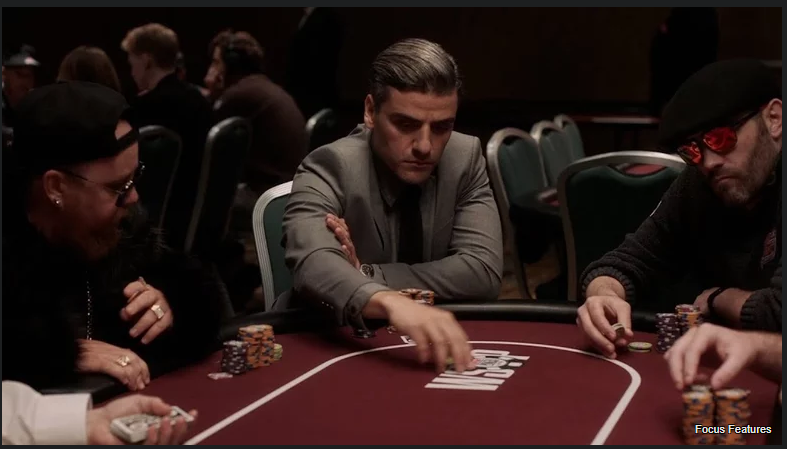

Sept 29, 2021

I mean the title says he is pretty funny, what more do you need to know?
To watch the podcast click here
Sept 17, 2021

Written and directed by Paul Schrader of Taxi Driver and Raging Bull fame (highlighting a long and impressive career résumé), the film stars Oscar Isaac, Tiffany Haddish, Tye Sheridan, and Willem Dafoe with Martin Scorsese an executive producer.
The film had its world premiere earlier this month at the Venice International Film Festival, with its official release coming last week on Sept. 10. Early reviews have been uniformly excellent, with some already predicting multiple Academy Award nominations when they are announced early next year.
To read the complete Pokerstars Blog post click here
Sept 10, 2021

Paul Schrader's latest movie, "The Card Counter," focuses on William Tell (Oscar Isaac), a man who has done unforgivable things and has found comfort in, and gotten very good at, playing poker. The film is a character piece, an exploration of how some monsters are made — in Tell's case he became one when he was in the military at Abu Ghraib — and how one man creates a life rife with rituals and routine to cope with what he's done.
To read the complete SlashFilm article click here